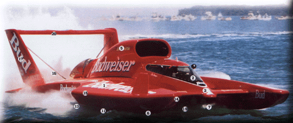
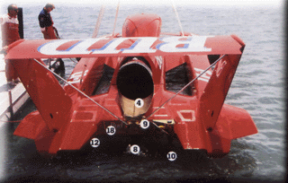

|
Unlimited Hydroplanes are the fastest race boats
in the world. Skimming across the water at speeds up to 200 miles per hour,
these craft are spectacular to watch.
 The Unlimiteds are built using aircraft construction techniques with composite materials, and each boat is one of a kind. From the 1950's through the 70's and into the 80's, World War II aircraft engines were the powerplant of choice. Lately, helicopter turbine engines are used by all but one team, the father/son owned Cooper U-3 which continues to set piston-powered lap speed records. Once a hydroplane comes up to speed, it "hydroplanes" on top of the water using airflow beneath the boat to decrease the boat's drag on the water. Hydroplanes fly more than they float, with the perfect 'stance' being just half of the prop in the water, and a square foot or less of water contact on the two forward sponsons. This type of boat design is often called a "three-point" or "prop-rider" hull. Sometimes a boat will catch too much air and do a breath-taking backflip called a "blow-over". Recent improvements in the safety of Unlimited Hydroplanes has saved the lives of numerous drivers. The most notable advancement has been the use of modified military aircraft cockpits to secure the pilot in a watertight capsule. While the cockpit itself has not survived all crashes, until recently all of the pilots have. Sadly, George Stratton was our first loss since Dean Chenoweth [1982] during testing at the San Diego race in 2000. As a result, teams continue to strengthen their cockpits. One of the few regulations of Unlimited Hydroplane Racing (outside of safety issues) is that the boat must be propeller driven. The large pipe coming off the jet engine towards the tail is used only as an exhaust. Within the last few years fuel regulation rules have also been in place, and they are always a source of controversy. Purists feel the rules have no place in an 'Unlimited' class, while the realists counter that parts for these out-of-manufacture engines are very limited in availability and that the rules increase competition. (Text copyright Brian Reed)

|